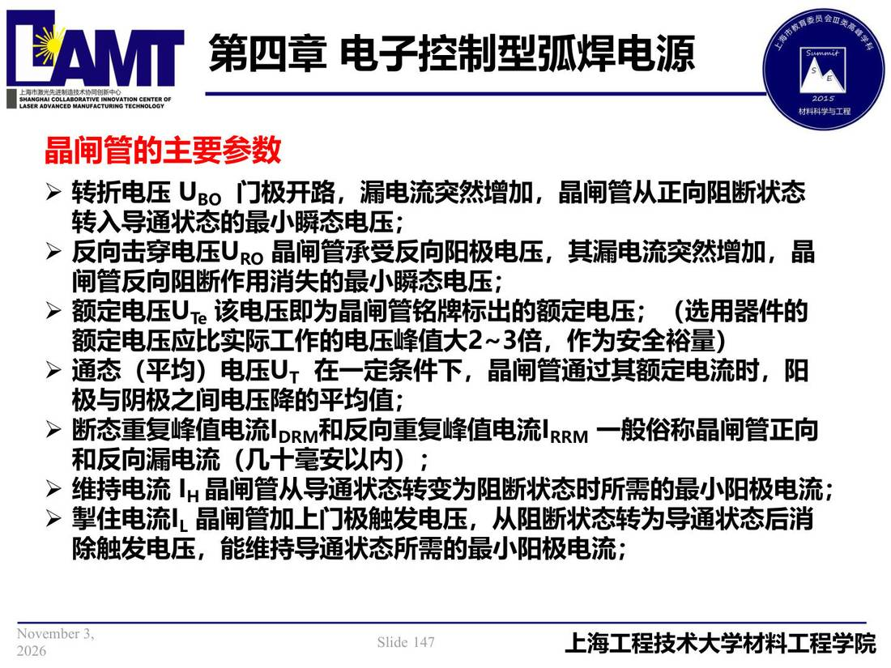

04 第4章 电子控制型弧焊电源/p147 晶闸管的主要参数
p147 晶闸管的主要参数
📄 原文：📄 弧焊电源 课件（PDF 第 147 页）（幻灯片 147/273；PDF 第 147 页）
晶闸管的主要参数

讲义原文
- 转折电压 UBO 门极开路，漏电流突然增加，晶闸管从正向阻断状态转入导通状态的最小瞬态电压；
- 反向击穿电压URO 晶闸管承受反向阳极电压，其漏电流突然增加，晶闸管反向阻断作用消失的最小瞬态电压；
- 额定电压UTe 该电压即为晶闸管铭牌标出的额定电压；（选用器件的额定电压应比实际工作的电压峰值大2~3倍，作为安全裕量）
- 通态（平均）电压UT 在一定条件下，晶闸管通过其额定电流时，阳极与阴极之间电压降的平均值；
- 断态重复峰值电流IDRM和反向重复峰值电流IRRM 一般俗称晶闸管正向和反向漏电流（几十毫安以内）；
- 维持电流 IH 晶闸管从导通状态转变为阻断状态时所需的最小阳极电流；
- 掣住电流IL 晶闸管加上门极触发电压，从阻断状态转为导通状态后消除触发电压，能维持导通状态所需的最小阳极电流；
本页标红（老师强调）
- 晶闸管的主要参数